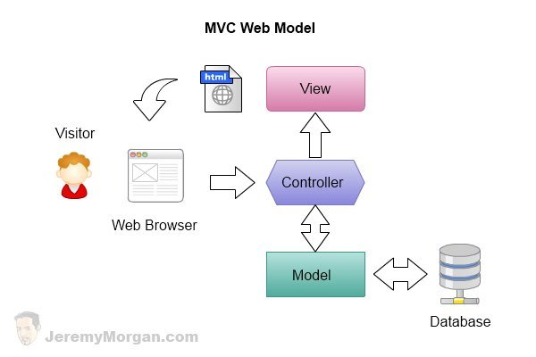

Web interface to User Directory Application
Table of Contents
1 Introduction
This document discribes how to implement a simple web application using AngularJS MVC framework.
2 What we have so far ????
- Requirements
- Data Model
- Object implementation of the data model
- Persistence via ORM (Database)
- REST API url interface (a specification of urls for each operation)
- Web interface to system ???
3 What is MVC framework
- The Model-View-Controller (MVC) is an architectural pattern that
separates an application into three main logical components
- The model
- The view and
- The controller.
- Each of these components are built to handle specific development aspects of an application.
- MVC is one of the most frequently used industry-standard web development framework to create scalable and extensible projects.
- Diagrame

3.1 Model
The Model is the part of the application that handles the logic for the application data. Often model objects retrieve data (and store data) from a database.
3.2 View
The View is the parts of the application that handles the display of the data. Most often the views are created from the model data.
3.3 Controller
The Controller is the part of the application that handles user interaction. Typically controllers read data from a view, control user input, and send input data to the model.
3.4 Advantages
- The MVC separation helps you manage complex applications, because you can focus on one aspect a time. For example, you can focus on the view without depending on the business logic. It also makes it easier to test an application.
- The MVC separation also simplifies group development. Different
developers can work on the view, the controller logic, and the business logic in parallel.
4 Why MVC ??
5 How to implement ??
5.1 Source Code
5.1.1 Initiating Angular application on html page
<div ng-app="directoryApp"> <div ng-view> </div> </div>
5.1.2 Router
app.js
var app = angular.module('directoryApp',['ngRoute','directoryApp.controllers']); app.config(function($routeProvider){ $routeProvider .when('/', { templateUrl : '/static/partials/users.html', controller : 'users' }); });
5.1.3 Controller
controller.py
var app = angular.module('directoryApp.controllers',[]); app.controller("users", function($scope, $http, $routeParams, $route,$window){ $scope.role_name = $window.role_name; $http.get("http://localhost:5000/users", {headers: {'session': 'admin@xyz.com'}}).success(function(response){ $scope.users = response; }); });
5.1.4 View
users.html
<div class="row"> <div class="col-md-9"><h2>Users</h2></div> <div class="col-md-2" ng-if="role_name == 'admin'"> <a href="#/add-user" class="btn btn-primary">Add User</a> </div> </div> <div class="row"> <div class="col-md-12"> <div class="table-responsive"> <table class="table table-stripped"> <thead> <tr> <th>S.NO</th> <th>Name</th> <th>Role</th> <th>Action</th> </tr> </thead> <tbody> <tr ng-repeat="user in users"> <td>{{ $index+1 }}</td> <td>{{ user.name }}</td> <td>{{ user.role['name'] }}</td> <td><a href="#/view-user/{{user.id}}" class="btn btn-primary">View</a></td> </tr> </tbody> </table> </div> </div> </div>